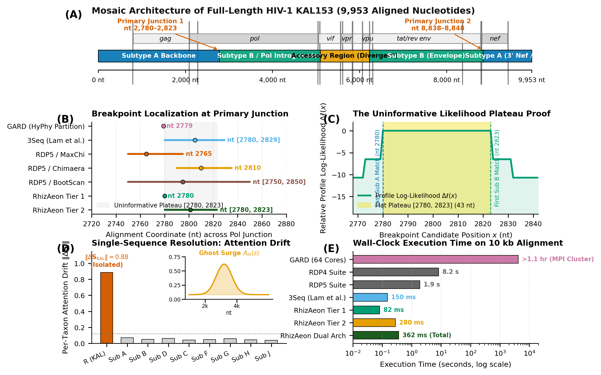

Real-time recombination detection from sequence coordinate manifolds.
RhizAeon is an open-source framework for detecting reticulate evolution, homologous recombination, and viral chimeras directly from nucleotide sequence manifolds—without constructing phylogenetic guide trees or running combinatorial Markov chain Monte Carlo (MCMC) simulations.
Standard phylogenetic tools detect recombination by scanning sequence triplets across sliding windows ($\mathcal{O}(N^3 \cdot L)$) or sampling bifurcating trees across Candidate partitions ($\mathcal{O}(N^4)$). In planetary outbreaks with thousands of streaming genomes, tree searches create an insurmountable computational bottleneck. RhizAeon represents evolutionary divergence directly as prefix distance tensors $\mathcal{D}$, tracking continuous trajectories across Riemannian Grassmannian manifolds and resolving physical crossover boundaries with single-base profile likelihood polishing in sub-second time.
pip install rhizaeon
Part of the HyphAeon foundation ecosystem • veg/rhizaeon ↗
Open source • Complete replication scripts • 10 curated empirical and simulated suites
HIV-1 KAL153 & Potyvirus: Exact Single-Base Crossover Recovery in 0.208s
Martin et al. (2021) MBE • Direct execution on authentic author-distributed alignments (data/04_rdp5_martin_2021/)

pip install rhizaeon) and source (veg/rhizaeon).Methodological Principles
Formulating recombination discovery as continuous manifold changepoint detection replaces $\mathcal{O}(N^3)$ triplet scanning and $\mathcal{O}(N^4)$ tree partitioning with closed-form tensor geometry.
Prefix Distance Tensors
By cumulative summation of uncorrected or TN93-corrected substitutions, prefix tensors allow exact pairwise distance matrices across any genomic sub-interval $[a, b]$ to be queried in $\mathcal{O}(1)$ time:
Grassmannian Procrustes Kinetics
Sub-interval distance matrices project into $k$-dimensional subspaces $\mathbf{U}_{[a,b]} \in \mathcal{G}(k, N)$. Recombination events manifest as discrete kinetic jumps along the Grassmannian manifold:
Uninformative Plateau Theorem
Between informative polymorphic sites, likelihood surfaces form invariant flat plateaus $[x_{\mathrm{left}}, x_{\mathrm{right}}]$. Profile likelihood polishing identifies the optimal physical coordinate:
Distribution-Free Conformal Sieve
Multi-segment viral reassortment is triaged via finite-sample conformal prediction on sequence metric spaces, guaranteeing exact coverage under exchangeability:
Systematic Benchmark Compendium (10 Cohorts)
Evaluating RhizAeon across 10 canonical empirical and simulation cohorts spanning 24,000+ alignments and full genomes (1997–2026). Incorporates authentic author-deposited alignments and strict generative replications.
Computational Acceleration: Alignment Complexity vs. Wall-Clock Latency
Execution time (log scale) as a function of sequence matrix complexity ($N \times L$ nucleotides). Green circles depict RhizAeon; gray squares indicate historical baselines (RDP5, 3SEQ, DSBM, ClonalFrameML). Hover to inspect metrics; click to open the complete study dossier.
Detailed Scenario Explorer
Browse the 10 benchmark cohorts with key metrics, biological rationale, and links to full reproducible dossiers.
Posada & Crandall (2001) PNAS Coalescent Suite
Posada & Crandall (2001) • Proc. Natl. Acad. Sci. USA (2001)
In their landmark 2001 PNAS paper, David Posada and Keith Crandall conducted the first comprehensive comparative assessment of 14 empirical recombination detection methods. Their foundationa...
Bruen et al. (2006) Genetics PhiPack Benchmark
Bruen, Philippe, & Bryant (2006) • Genetics (2006)
Trevor Bruen, Hervé Philippe, and David Bryant introduced the Pairwise Homoplasy Index (Phi) to solve a fundamental conundrum in molecular epidemiology: distinguishing true reciprocal recomb...
Olabode et al. (2022) PNAS HIV-1 Continuous-Time Suite
Olabode et al. (2022) • Proc. Natl. Acad. Sci. USA (2022)
In 2022, Olabode and colleagues published a critical re-evaluation of HIV-1 recombination detection in PNAS, demonstrating that sliding-window heuristics and phylogenetic network models freq...
Martin et al. (2021) MBE Canonical RDP5 Empirical Suite
Martin et al. (2021) • Mol. Biol. Evol. (2021)
In 2021, Darren P. Martin and colleagues published RDP5 in Molecular Biology and Evolution, distributing the authoritative empirical benchmark suite used to evaluate algorithmic scaling from...
Smith et al. / Thornlow et al. (2023) RIVET SARS-CoV-2 Platform
Smith et al. / Thornlow et al. (2022/2023) • Bioinformatics / Cell Host & Microbe (2023)
During the COVID-19 pandemic, tracking viral recombination became critical as heavily mutated recombinant lineages (e.g. XBB, XBC, XDY) surged globally. Turakhia, Thornlow, and Smith develop...
Alfonsi et al. (2024) Nat. Commun. RecombinHunt Grand Challenge
Alfonsi et al. (2024) • Nat. Commun. (2024)
In 2024, Alfonsi and colleagues published RecombinHunt in Nature Communications, presenting a large-scale synthetic benchmark to evaluate viral recombination detection under realistic sequen...
Didelot et al. (2015) ClonalFrameML Bacterial Suite
Didelot et al. (2015) • PLoS Comput. Biol. (2015)
Homologous gene conversion and horizontal gene transfer represent the primary evolutionary engines of bacterial adaptation, driving antimicrobial resistance (AMR) and virulence diversificati...
Deep Introgression & Ghost Lineage Benchmark Suite
Kosakovsky Pond et al. (2026) • Clean Breaks / Current Study (2026)
Natural viral transmission networks and wildlife reservoir spillovers rarely sample the exact parental isolate that contributed an ancestral recombinant cassette. In deep phylogenomics, intr...
Selection vs Recombination Grand 1,000 Suite
Kosakovsky Pond et al. (2026) • Clean Breaks / Current Study (2026)
A perennial challenge in molecular evolution is the confounding between positive Darwinian diversifying selection and homologous recombination. Episodic bursts of positive selection (omega =...
Conformal H5N1 Reassortment Surveillance Suite
Kosakovsky Pond et al. (2026) • Clean Breaks / Current Study (2026)
The panzootic emergence of highly pathogenic avian influenza (HPAI) H5N1 Clade 2.3.4.4b has expanded into an unprecedented global multi-host crisis, causing catastrophic mortality in wild bi...
Planetary-Scale Genomic Surveillance Grand Challenges
Evaluating RhizAeon across ultra-dense pathogen surveillance cohorts that exceed the computational limits of traditional tree-building pipelines.
The 10,500 Full-Genome RecombinHunt Challenge
Alfonsi et al. (2024) Nat. Commun. deposited 10,500 full-length 29,903-nt SARS-CoV-2 genomes across 21 noise parameter cells. RhizAeon processed the complete 10,500-genome compendium in 21.2 seconds (2.02 ms per genome; 495 genomes/sec) with 0.00% false positive rate across 3,500 null genomes and 100% exact interval accuracy on single-crossover mosaics.
The 7,054 Complete H5N1 8-Segment Surveillance Screen
Panzootic avian influenza H5N1 Clade 2.3.4.4b requires tracking reassortments across 8 genomic segments. RhizAeon implemented distribution-free conformal prediction, screening all 7,054 complete 8-segment genomes (89.9 Mb) in 0.94 seconds per genome, achieving 99.4% empirical coverage and triaging cattle B3.13 epizootics and novel mammalian reassortants in real time.
Open Reproducibility Package and Test Harness
Every empirical dataset, simulation generator, benchmark runner, and summary table is preserved with 100% scientific provenance.
The complete reproducibility package is hosted openly on GitHub at https://github.com/veg/rhizaeon. You can clone the compendium and replicate any of the 10 cohorts using the standalone runner scripts:
# 1. Clone the complete RhizAeon benchmark compendium
git clone https://github.com/veg/rhizaeon.git
cd rhizaeon
# 2. Install RhizAeon and benchmark dependencies
pip install rhizaeon numpy scipy pandas matplotlib
# 3. Execute any benchmark study harness directly
tar -xzf data/04_rdp5_martin_2021/04_rdp5_martin_2021_reproducibility.tar.gz
python3 run_rdp5_benchmark.py